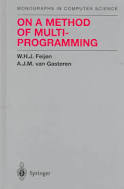

Boeken:

- 1. Predicate Calculus and Program Semantics
- -Dit boekje presenteert een redelijk zelfstandige theorie van het predikaat trans voormalige semantiek.
- -Auteur(s): Carel S. Scholten, Edsger W. Dijkstra
- -Jaar van uitgeving: 1990
- 2. A Method of Multi-Programming
- -Dit boek gaat over een methode van multi-programmering
- -Auteur(s): W.H.J. Feijen, Edsger W. Dijkstra, J. Sterringa
- -Jaar van uitgeving: 1988
- 3. Selected Writings on Computing: A personal Perspective
- -Persoonlijke perspectief van Edsger Dijkstra over programmeren
- -Auteur(s): Edsger W. Dijkstra
- -Jaar van uitgeving: 1982
- 4. Program Construction
- -Dit boek gaat over het opbouw van programmeren
- -Auteur(s): Bauer, F.L., Dijkstra, E.W., Gerhart, S.L., Gries, D., Griffiths, M., Guttag, J.V., Horning, J.J., Owicki, S.S., Pair, C., Partsch, H., Pepper, P., Wirsing, M., Wössner, H.
- -Jaar van uitgeving: 1979
- 5. A Discipline of Programming
- -Dit boek gaat over het discipline van programmeren
- -Auteur(s): Edsger W. Dijkstra
- -Jaar van uitgeving: 1976
- 6. Structured programming
- -Dit boek gaat over gestructureerde programmering
- -Auteur(s):Ole-Johan Dahl, Tony Hoare, Edsger W. Dijkstra
- -Jaar van uitgeving: 1972